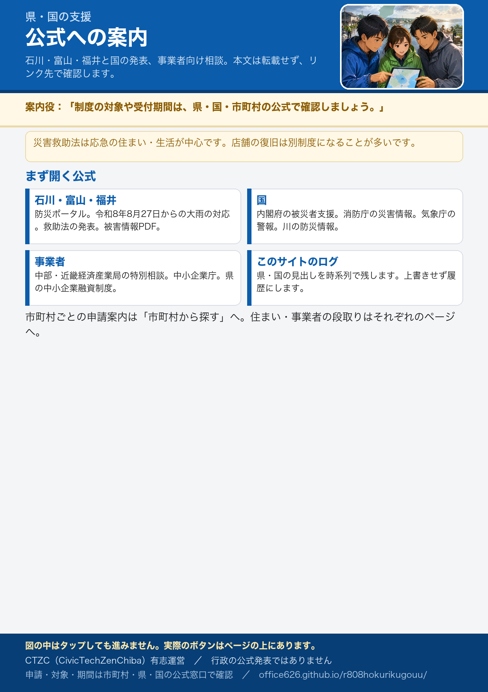

県・国の支援情報（公式への案内）
本文は転載しません。リンク先で確認してください。数値は速報です。
県・国の公式お知らせ（受付状態・更新検知つき）
義援金・災害救助法・生活再建支援・資金繰りなど。受付状態と確認日は有志が見た時点のもの。ページ本文の変化は数時間おきに自動で見ています（「更新検知」の時刻は検知時刻）。
国
県・国のログ

本文は転載しません。リンク先で確認してください。数値は速報です。
義援金・災害救助法・生活再建支援・資金繰りなど。受付状態と確認日は有志が見た時点のもの。ページ本文の変化は数時間おきに自動で見ています（「更新検知」の時刻は検知時刻）。
